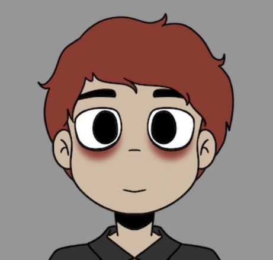
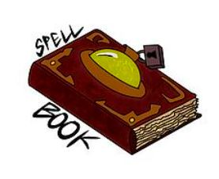
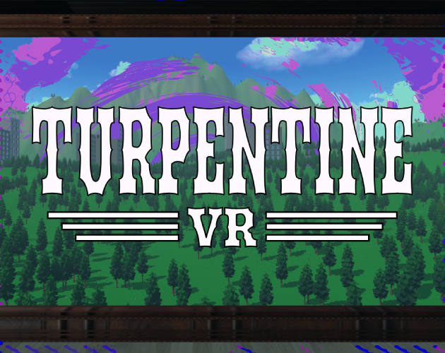

Projects
Game and Software Prototype Showcase. Click on a project to learn more!

Neon Rhythm
Unity
A rhythm game featuring early 2000s to late 90s rock music and bands!

Spellbook
Unity
An action typing game testing and improving users typing skills and reaction time!

Turpentine VR
Unity
A VR exerience playing as an oil tycoon potentially saving the environment!
Arcane Combat
Tabletop Game
A card battler where casters set up wards and spells from their spell deck!
D&D Homebrew
TTRPG documents made with Markdown/HTML/CSS
Homebrew content expanding the gameplay of Dungeons and Dragons 5th Edition!
O.O.F. Sleep App
Figma Protoype
A sleep app prototype dedicated to improving users sleep habits and sleep quality!
Plan Of Attack
Pokemon Showdown Pet Mod
A pokemon showdown custom game made with entirely new and unique monsters as the pokemon!